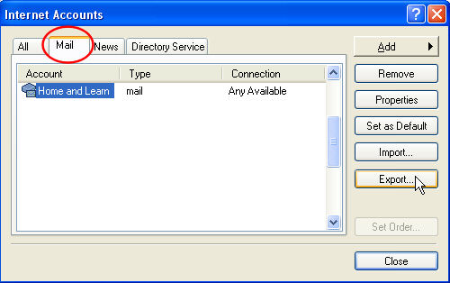
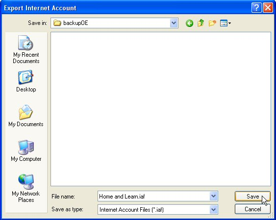

Free
computer Tutorials
|
Free
computer Tutorials
|
|
 home home |
Stay at Home and Learn | ||||
How to backup an Outlook Express Email Account
When you create a new email account in Outlook Express, the process can be quite tricky - especially if you don't know the pop and smtp details, and have had to phone up your ISP to find out! Now that you've set up the email account, it's worth backing up these details, just in case something happens to your PC. Here how to do it.
 In the Image above, we've clicked on the Home and Learn email account to select it. The Export button is on the right hand side, near the bottom. When you click the Export button, you'll get the follow dialogue box popping up:  The file extension is IAF. This tells you that it is an Outlook Express email account. The name of the file is Home and Learn. We're saving it to our F drive for safe keeping, in a folder called backupOE. When you click the Save button, the email account will backed-up. (The only thing not saved will be your password.) If anything happens to your PC, you can import the email account quite easily. Just click the Import button on the Internet Accounts box, instead of the Export button.
In the next tutorial, you'll learn how to set up an identity with Outlook Express. This is very useful if you have only one PC but more than one user. Use an Identity to set up a second
Outlook Express Account --> |
|||||
|